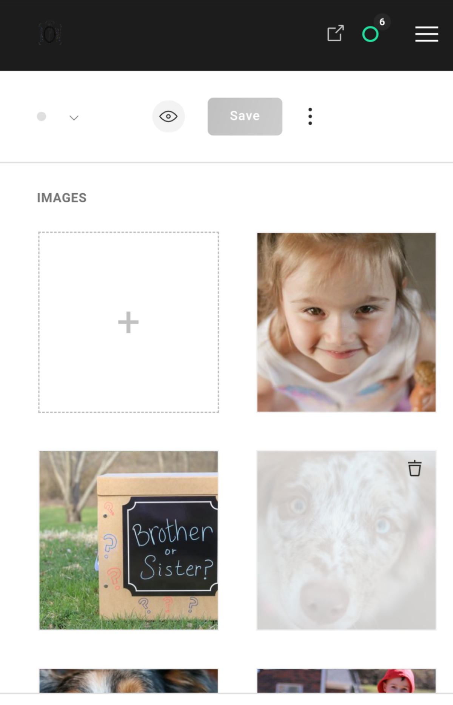
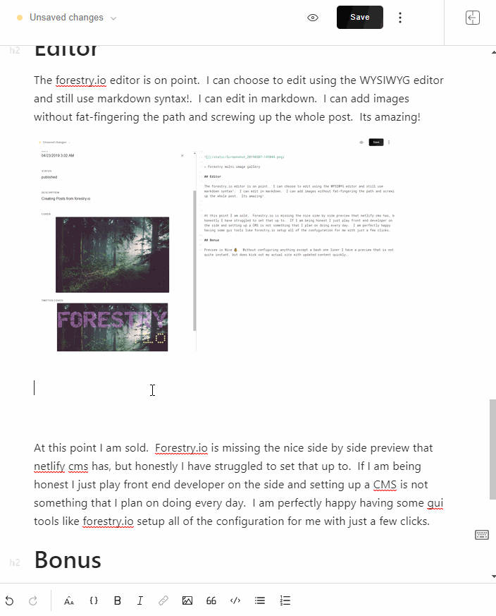

Forestry.io
2019-04-23T08:02:00.000Z
Testing out forestry.io
Sorry Netlify CMS
I still ♥️ your product dont be
forestry is simple
I have been playing with the netlify cms for a while now and it has been a decent experience, but I really struggle configuring it. Forestry is so simple to setup. My favorite part is that I can code up my gatsby.js site , storing all editable text in markdown, and come back later and add the CMS based on existing documents.
Configuration is Simple
Forestry.io has this amazing feature to create create based on existing document ü§Ø. This is great because it sets up the .yml config for me without error. And If I really want to come back later to customize it more I have that option to.

By far my favorite feature is create based on existing document
Multi-File Gallery
I have a use case for a photography site where the owner wants to be able to show off sample photos of each type of work she does. I got it working in the netlify cms although it was not very user friendly. Everything was nested in an accordian üò¢.

Netlify multi image upload
Next I looked into forrestry.io. I pointed forestry.io at the existing git repo, created a template based on an existing document and BAMüí• a nice image grid appeared.

Forestry multi image gallery
Editor
The forestry.io editor is on point. I can choose to edit using the WYSIWYG editor and still use markdown syntax!. I can edit in markdown. I can add images without fat-fingering the path and screwing up the whole post. Its amazing!

Images
Image upload is on point! Just click the add image button, it pops you into your media library, choose an image, or upload it and your off to the races üèá.

Im Sold üí≤
At this point I am sold. This blog is now written from Forrestry, and I love it. It's great when I am away from my editor to make some progress on the go. If I decide I dont like it in 6 months, I can move on. All of my content is still in markdown on the git repo.
Forestry.io is missing the nice side by side preview that netlify cms has, but honestly I have struggled to set that up to. If I am being honest I just play front end developer on the side and setting up a CMS is not something that I plan on doing every day. I am perfectly happy having some gui tools like forestry.io setup all of the configuration for me with just a few clicks.
Bonus
Preview is Nice üëå. Without configuring anything except a bash one liner I have a preview that is not quite instant, but does kick out my actual site with updated content quickly.
Check out my otherblogs
Join my Newsletter
.